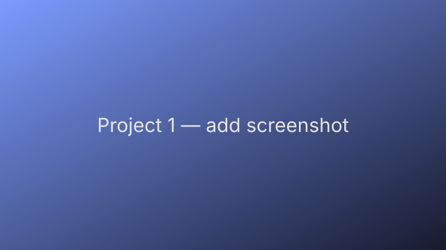
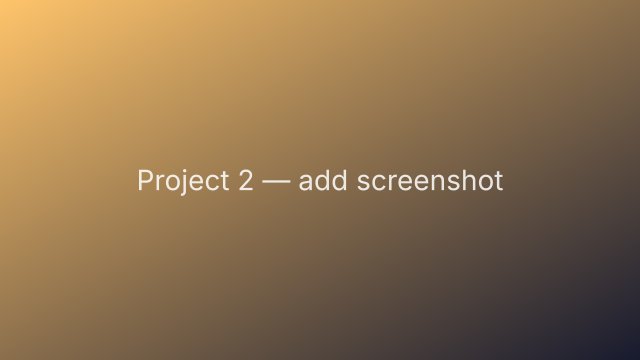
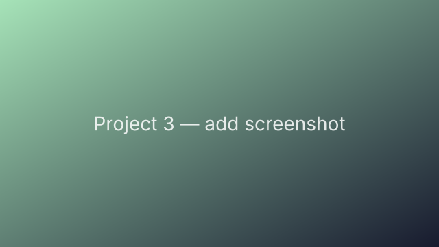

Welcome
Information Systems & Data Analytics at Utah State University. I build data-driven systems and autonomous agents that turn messy information into clear decisions.
📍 Logan, UTI'm finishing a dual major in Information Systems and Data Analytics at Utah State University. My work sits at the intersection of data, decisions, and automation — I care about building tools people actually use.
Right now I'm especially interested in AI agents: systems that reason, use tools, and carry out multi-step work on behalf of a user. This site is my home for those experiments.
Things I've built. Click through for a write-up, code, or a demo video.


Short, punchy description of what the agent does and what problem it solves.

Stuff I'm into when I'm not at a keyboard.
A sentence or two about something you love doing. Keep it human.
Another thing you enjoy — travel, music, sports, cooking, reading, etc.
One more — maybe a project or interest totally unrelated to data.